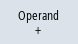

Changes can only be made to the NC/PLC variables with the appropriate password.

|
Warning |
Incorrect parameterizationChanges in the states of NC/PLC variables have a considerable influence on the machine. Incorrect configuration of the parameters can endanger life and cause damage to the machine. |
In the "NC/PLC Variables" window, enter the NC system variables and PLC variables that you want to monitor or change in the list:
-
Variable
Address for NC/PLC variable.
Incorrect variables have a red background and are displayed with a # character in the value column.
-
Comment
Any comment on the variable.
The columns can be displayed and hidden.
-
Format
Specify the format in which the variable is to be displayed.
The format can be specified (e.g. floating point).
-
Value
Displays the actual value of the NC/PLC variables
PLC variables | |
|---|---|
Inputs |
|
Outputs |
|
Bit memory | Memory bit (Mx), memory byte (MBx), memory word (MWx), memory double word (MDx) symbolic (MArea.<variable name>) |
Times | Times can only be accessed with symbolic address |
Counters | Counters can only be accessed with symbolic address |
Data | Data block (DBx): Data bit (DBXx), data byte (DBBx), data word (DBWx), data double word (DBDx) |
Formats | |
|---|---|
B | Binary |
H | Hexadecimal |
D | Decimal without sign |
+/-D | Decimal with sign |
F | Floating point (for double words) |
A | ASCII character |
Notation examples
Permissible notation for variables:
PLC variables:
Addresses: EB2, A1.2, DB2.DBW2
Names: LBP_NC.E_NCKready, LBP_HMI.A_MCPChan IArea.VarInput1, QArea.VarOutput1
Note With symbolic addressing, the operand must be set in quotation marks (" ") depending on the characters and digits it contains.
More information can be found in the FAQ entry ""
NC variables:
NC system variables: Notation $AA_IM[1]
User variables / GUD: Notation GUD/MyVariable[1,3]
OPI notation: /CHANNEL/PARAMETER/R[u1,2]
| Note |
If the PLC user program writes a string in an NC/PLC variable, the string will only be displayed correctly if the variable is parameterized as a field variable of the type "A" (ASCII) on the NC side. |
Example of a field variable
Variable | Format |
DBx.DBBy[<number>] | A |
LBP_ModeGroup.MG[2].A_MGReset | B |
Inserting variables
The start value for "Filter/Search" of variables differs. For example, to insert the variable $R[0], enter the following start value:
The start value is 0 if you filter according to "System variables".
The start value is 1 if you filter according to "All (no filter)". In this case, all signals are displayed and shown in the OPI notation.
The GUD from the machine data is only displayed in the Search window for the variable selection when the associated definition file has been activated. Otherwise, the sought variables must be entered manually, e.g. GUD/SYG_RM[1]
The following machine data is representative for all variable types (INT, BOOL, AXIS, CHAR, STRING): MD18660 $MN_MM_NUM_SYNACT_GUD_REAL[1].
| Note |
Display of NC/PLC variables
Servo variables Servo variables can only be selected and displayed at "Diagnostics" → "Trace". |
Changing and deleting values


Editing a variable list
You can edit the variable list using the "Insert line" and "Delete line" softkeys.
Changing operands
Depending on the type of operand, you can increment or decrement the address by 1 place at a time using the "Operand +" and "Operand -" softkeys.
| Note |
Axis names as indexFor axis names, the "Operand +" and "Operand -" softkeys do not act as index, e.g. for $AA_IM[X1]. |
Examples | ||
|  | DB97.DBX2.5 Result: DB97.DBX2.6 $AA_IM[1] Result: $AA_IM[2] | |
MB201 Result: MB200 /Channel/Parameter/R[u1,3] Result: /Channel/Parameter/R[u1,2] |